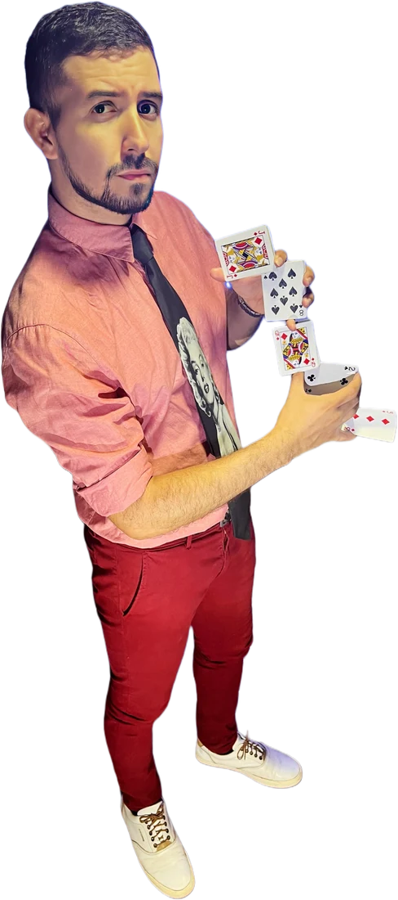

🃏
Magia en sus manos
Los trucos pasan frente a los ojos de tus invitados, con objetos comunes, y a veces en sus propias manos.
Magia de cerca · Mesa por mesa
Un mini show de bienvenida en cada mesa o en los grupos que van llegando. La magia sucede a centímetros de sus ojos y hasta en sus propias manos.
Presupuesto online en pocos minutos · Sin compromiso

Mientras llegan los invitados, la magia ya está sucediendo en cada mesa.
Los trucos pasan frente a los ojos de tus invitados, con objetos comunes, y a veces en sus propias manos.
Reacciones genuinas, caras de sorpresa y un ambiente que se relaja desde el primer instante.
Una experiencia personal, que rompe el hielo y hace que todos se acerquen y se diviertan.
Opiniones reales de quienes ya me contrataron.
Tres pasos para tener tu fecha asegurada.
Completá un formulario corto: tipo de evento, fecha y lugar.
Al terminar ves el presupuesto en pantalla y lo podés descargar.
Escribime por WhatsApp, confirmo la disponibilidad y se reserva con una seña.
Dura 1 hora y media, recorriendo el evento mesa por mesa o grupo por grupo.
Es un mini show de bienvenida: voy a la mesa de tus invitados o a los grupos que van llegando y hago magia a centímetros de sus ojos, con objetos comunes como monedas, cartas y bandas elásticas.
Para recepciones, casamientos, 15 años, eventos de empresa, bares y restaurantes.
Sí. Podés sumar magia de cerca en la recepción y un show de salón para cerrar la noche. En el formulario elegí la opción "Las dos".
Para las localidades que figuran en el formulario, sí: el presupuesto ya incluye viáticos y traslado. Si tu evento es en otra localidad, calculo el traslado según la distancia y te envío el presupuesto por WhatsApp.
Completás el formulario, ves tu presupuesto y me escribís por WhatsApp. Yo confirmo la disponibilidad y la fecha queda reservada con una seña.
Trabajo en Chaco, Corrientes y norte de Santa Fe, con base en Resistencia.
Pedí tu presupuesto online en unos minutos y reservá tu fecha.